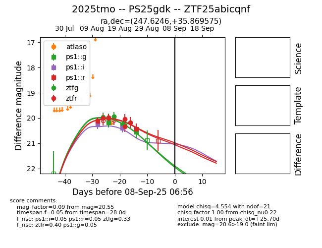

Target 2025tmo at 2025-08-21 09:29, see:
FINK: fink-portal.org/ZTF25abicqnf
Lasair: lasair-ztf.lsst.ac.uk/objects/ZTF25abicqnf
ALeRCE: alerce.online/object/ZTF25abicqnf
TNS: wis-tns.org/object/2025tmo
YSE: ziggy.ucolick.org/yse/transient_detail/2025tmo
alt names
ZTF25abicqnf (ztf,alerce)
2025tmo (tns,yse)
PS25gdk (panstarrs)
coordinates:
equatorial (ra, dec) = (247.6246,+35.86961)
galactic (l, b) = (57.9075,+43.09927)
photometry
last ztfg=20.22, ztfr=20.34
8 ztfg, 7 ztfr detections
